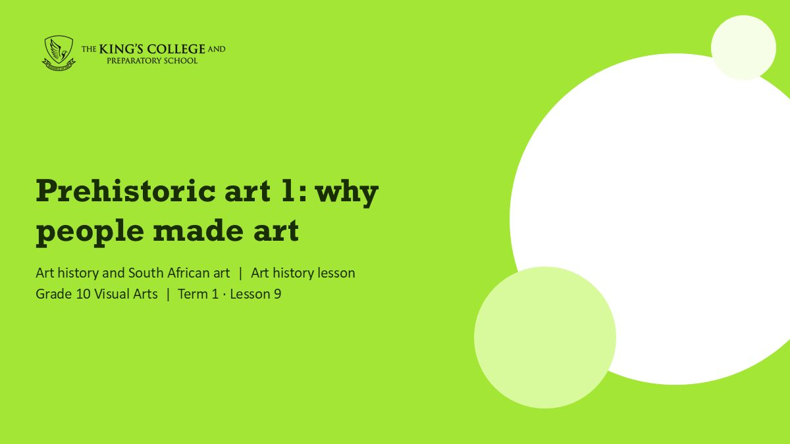

Term 1 · Lesson 9 · Art history lesson
Prehistoric art 1: why people made art
Start here
Today I will
- Name three famous Palaeolithic painted caves
- Explain how cave paintings were made
- Weigh up theories about why they were made
Why would someone crawl deep into a dark cave, with only a flickering lamp, just to paint a horse?
Words to know
- Palaeolithic
- The Old Stone Age, when people lived by hunting and gathering.
- Pigment
- Coloured powder mixed with a binder to make paint.
- Ochre
- A natural earth pigment, usually red, yellow or brown, made from iron-rich clay.
- Sympathetic magic
- The idea that painting an animal could help bring success in hunting it.
- Cave painting
- An image painted or drawn on the walls or ceiling of a cave.
Slides

Notes
Why prehistoric people made images; the Palaeolithic caves (Chauvet, Lascaux, Altamira); how the art was made and what it may have meant.
Three famous caves
- Chauvet, France: Among the oldest known cave paintings, over 30 000 years old: horses, lions and rhinoceroses drawn with shading.
- Lascaux, France: About 17 000 years old; the Hall of the Bulls has large bulls, horses and deer that overlap across the rock.
- Altamira, Spain: Famous for its ceiling of bison painted in red and black, using the bumps of the rock.
- How they were made: Ochre, charcoal and manganese, applied with pads, fingers and simple brushes or blown through hollow bones.
Why did they paint?
| Theory | Evidence for it |
|---|---|
| Hunting (sympathetic magic): painting animals to bring success in the hunt. | Animals dominate, and some appear to have marks like spears. |
| Ritual and belief: the caves were sacred places for ceremonies. | Paintings are deep in dark, hard-to-reach spaces, not where people lived. |
| Recording and teaching: showing which animals mattered. | Animals are drawn from close observation, in clear side view. |
No writing, so the art itself is the evidence: look before you guess.
People made images long before they wrote. What might this say about humans being made in the image of a creative God?
Practical
You need: History booklet, visual journal
Analyse a cave painting
- Write the facts: Hall of the Bulls, Lascaux, c. 15 000 BCE (about 17 000 years ago), mineral pigments on limestone.
- Describe: list the animals, how they are placed and the colours used.
- Analyse: write one FET formula sentence about line and one about form.
- Interpret: suggest two possible meanings for the painting.
- Back each meaning with one piece of evidence from the painting or its setting.
- Finish with one sentence on which theory you find most convincing, and why.
Homework: summarise the first section of the prehistoric chapter.
Test yourself
- Name two pigments used in Palaeolithic cave paintings.
- Explain the theory of sympathetic magic.
- Give one reason why many art historians link cave paintings to ritual.
Show answers
1. Any two of: red or yellow ochre, charcoal, manganese. 2. The belief that painting an animal could bring success in hunting it. 3. The paintings are deep in dark, hard-to-reach parts of caves, not in living areas.
Finished early?
Make a quick timeline card of the three famous caves.
- Draw a long line across a VJ page and mark 'oldest' at one end and 'more recent' at the other.
- Place Chauvet and Lascaux on the line in the right order, and add Altamira with its ceiling of bison.
- Add a tiny sketch of one animal from each cave, using earth colours if you have them.
- Under the line, write one theory for why people painted, with one piece of evidence.